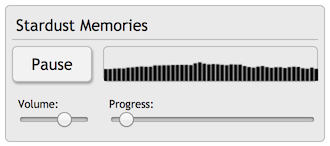

BassoonTracker provides a standalone player library that you can use in your own projects, to play module files without the tracker interface.
In addition to playing songs, you can also trigger samples individually.
This is especially well-suited for small (web) games:
- .mod and .xm files are usually much smaller than .mp3 files
- You can have several looping "subsongs" in 1 file, so for example you could have a different tune for each game section without loading additional data
- You can embed your sound-FX samples in the same file and still one-shot play them
The complete playback library is only 19.8 kb when gzipped (56 kb when uncompressed, 41 kb when
regpacked).
You'll find a
simple example here.
Hit the "play" button above to start the playback.
Library and sample code
Download the
bassoonplayer-min.js file, include it in your project's HTML page, and you're good to go!
If size matters and you don't need any advanced stuff, use the
b-zip.js file which is only 29.2 kb (Thanks
Dr. Snuggles)
The most simple example would be:
<script src="bassoonplayer-min.js"></script>
<script>
BassoonTracker.init(true);
BassoonTracker.load("url/to/file.mod", true);
</script>
The second parameter in
BassoonTracker.load defines whether the song should autoplay once loaded or not. (please note that some browsers need user interaction first before media playback is enabled)
You can use a third parameter as a
callback function, triggered when the loading of the file is complete:
<script>
BassoonTracker.load("url/to/file.mod", false, function(){
... do something
});
</script>
After BassoonTracker.init is loaded, you might want to check "Audio.context" to see if the browser supports
Webaudio.
Useful methods
BassoonTracker.togglePlay()BassoonTracker.isPlaying()BassoonTracker.playSong()BassoonTracker.stop()BassoonTracker.getTrackCount()BassoonTracker.getSong() (gets the current song)
BassoonTracker.getSong().titleBassoonTracker.getSong().length (in patterns)BassoonTracker.getSong().patterns (array of patterns)BassoonTracker.getSong().patternTable (array of pattern positions in the song)
BassoonTracker.setCurrentSongPosition(songPos)BassoonTracker.playSample(sampleIndex,sampleRate)BassoonTracker.getBPMBassoonTracker.getAmigaSpeedBassoonTracker.audio (pointer to the main audio object)
Indicating playback progress
The playback itself is scheduled in WebAudio and completely detached from the main JavaSscript thread.
Therefore there are no direct events to indicate playback progress.
If you want to display some UI with a progress indicator you will have to keep track of the start time of the song (
Audio.context.currentTime)
and call
BassoonTracker.getStateAtTime(time) periodically
(or
BassoonTracker.getTimeStates() to get the complete list).
Note that the player schedules audio ahead, so the last item in the
BassoonTracker.getTimeStates() list will be in the future.
Displaying pattern data
When a song is playing you can get the current pattern and row that is being played with
BassoonTracker.getStateAtTime(BassoonTracker.audio.context.currentTime)
This returns an object with 2 properties: songPos and patternPos.
You can then get the current pattern using BassoonTracker.getSong().patterns[BassoonTracker.getSong().patternTable[songPos]]
For a full example, please refer to the
Pattern View demo
Adjusting volume
If you want to adjust to volume, you can use
BassoonTracker.audio.masterVolume which is a
WebAudio GainNode.
If you want to adjust the volume for a specific track (e.g. to mute it), you can access each tracks audio output using
BassoonTracker.audio.filterChains[i].output() which is a
WebAudio GainNode. (where i is the 0-based index of the track)
More advanced player examples
Here is a
more advanced example of the player, with a playlist, a progress bar, a volume selector, and an audio visualization area.

And finally an
expanded example with an additional pattern view.